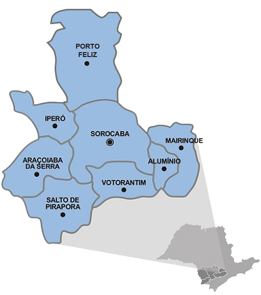

Dados demográficos de Sorocaba

Você ja viu a história e os pontos túristicos de Sorocaba temos agora algumas informações úteis para a compreensão da geografia da região,
não são todas, porém são as mais importantes, (maioria retirados do site do IBGE). Alguns dados podem estar desatualizados.
|
Dados |
| Área Territorial |
450,382 km² [2019] |
| População estimada |
687.357 pessoas [2020] |
| Densidade demográfica |
1.304,18 hab/km² [2010] |
| Escolarização 6 a 14 anos |
98,1 % [2010] |
| IDHM (Índice de desenvolvimento humano municipal) |
0,798 [2010] |
| Mortalidade infantil |
9,71 óbitos por mil nascidos vivos [2017] |
| Receitas realizadas |
2.904.617,70346 R$ (×1000) [2017] |
| Despesas empenhadas |
2.411.150,68528 R$ (×1000) [2017] |
| PIB per capita |
52.169,13 R$ [2018] |

| Religião |
Dados |
| Católicos |
56,45% |
| Protestantes |
27,77% |
| Sem religião |
7,42% |
| Espíritas |
3,38% |
| Ateus |
0,28% |
| Budistas |
0,25% |
| Umbandistas |
0,14% |
| Judeus |
0,02% |
| Etnía |
Dados |
| Brancos |
74,45% |
| Pardos |
20,26% |
| Negros |
4,06% |
| Asiáticos |
1,12% |
| Indígenas |
0,10% |